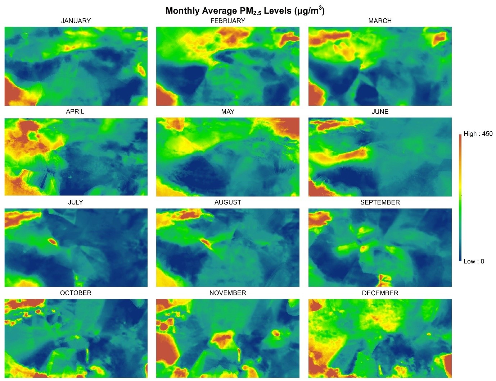
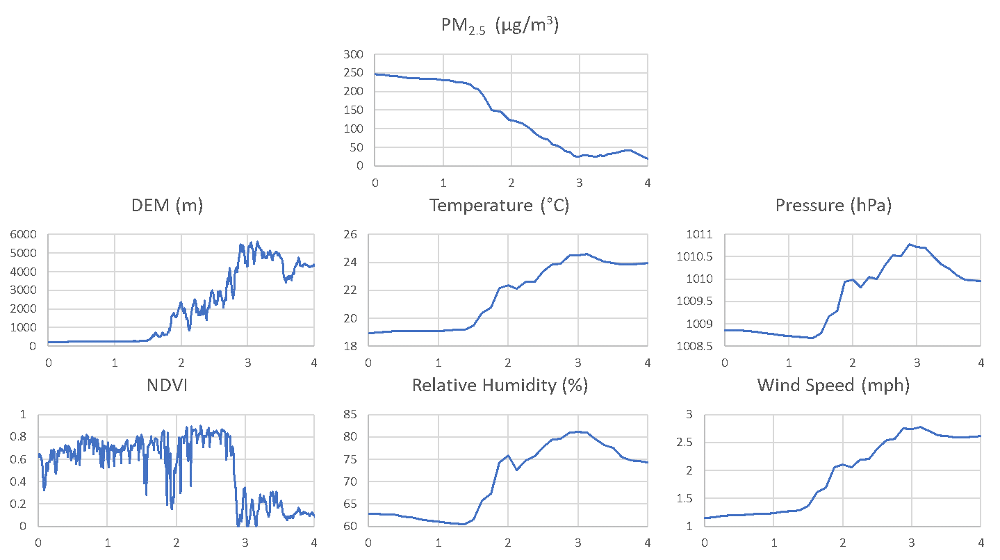

3 Results
The implementation of GTWR in Python 3.7 with an adaptive kernel of 50 neighbouring stations returned a final model with Akaike Information Criteria (AIC) value of 7.24 and \(R^2\) of 80.8. This suggests that the model has a high degree of explanatory power, and is able to model PM2.5 concentrations with a reasonable level of accuracy. Monthly average PM2.5 maps with a 1km grid over the study region were derived using the GTWR model. The PM2.5 values were calculated by averaging over three periodically spaced days with sufficiently high AOD coverage.
Spatially, there was a clear trend in most months that PM2.5 concentrations above the western Tibetan Plateau are lower than surrounding regions, especially the low-lying Tarim Basin towards the North and Nepal towards the South. In addition, this region of lower PM2.5 was almost always demarcated by Himalayan mountain ranges. This shows that elevation indeed has some influence over PM2.5 transmissions, and the Tibetan Plateau does exhibit a barrier-like effect. To explore this effect further, it is important to consider how elevation affects the atmospheric variables that contribute to PM2.5 transmission.
The drastic change in altitude around the Tibetan Plateau greatly affects atmospheric conditions that in turn influences PM2.5 transmission. For a clearer illustration of the relationship between PM2.5, elevation and atmospheric variables, data from 20th August 2015, which has a high AOD coverage, was extracted and visualised. Figures 3 and 4 show the profile of PM2.5 and other variables over line segments AB and CD as illustrated in Figure 1.
Figures 3 and 4 show that elevation has clear effects on temperature, pressure, relative humidity and wind speed. In general, an increase in elevation is associated with increases in the relevant atmospheric factors, and generally a decrease in PM2.5. The relationship between elevation and NDVI is less clear, especially in Figure 4, suggesting that NDVI probably has a smaller impact on PM2.5 concentrations. Nevertheless, elevation has considerable influence over atmospheric conditions that inhibit PM2.5 transmission into the Tibetan Plateau.
Elevation also affects an important component of PM2.5 transmission – wind direction. It has already been established that PM2.5 in the Tibetan Plateau is largely external and transmitted to the plateau by wind. As such, the presence of mountain ranges over the Tibetan Plateau is likely to contribute to the barrier effect by obstructing surface winds.

The white lines in Figure 5 illustrate the wind direction around the Tibetan Plateau on 20th August 2015, with the intensity of the line indicating the direction travelled. The raster colour indicates temperature as a means to distinguish the Plateau from surrounding areas. As seen in the south western part of the plateau, there was a divergence of the south westerly wind that approached the Himalayan mountain range. That corresponding area experiences a higher concentration of PM2.5 as seen in Figure 5. Similarly, the higher PM2.5 in the Tarim Basin is also likely to be caused by winds travelling towards the north western border of the Tibetan Plateau but being unable to travel over the mountain ranges. Lastly, the region of high PM2.5 at the northern end of the Tibetan Plateau, despite being an area of high elevation, may be influenced by the winds travelling in a circular pattern near that area, as seen in Figure 5. Whilst visual correlations may not serve as the most conclusive evidence, all these do suggest that wind direction (which may not always be influenced by elevation) is indeed an important influence over PM2.5 concentrations.
In the temporal dimension, the results generated were generally consistent with the observed seasonal variations by R. R. Li et al. (2019), who ordered the mean concentration of PM2.5 as ‘winter > spring > autumn > summer.’ Studies have associated lower temperatures, less precipitation and weaker wind as factors that may worsen air quality (Chen et al. 2001). Temporal variation in PM2.5 shows that elevation is not the sole factor that influences PM2.5 concentrations. The greater climatic factors that cause seasonal variation of atmospheric conditions such as temperature and wind speed also influence PM2.5 concentrations.